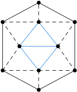

Die aufgeführte XML-Date enthält den Graphen aus der Abbildung 1

Abbildung 1: Der Birkhoff Diamant
<?xml version="1.0" encoding="UTF-8"?>
<graphml xmlns="http://graphml.graphdrawing.org/xmlns"
xmlns:xsi="http://www.w3.org/2001/XMLSchema-instance"
xsi:schemaLocation="http://graphml.graphdrawing.org/xmlns
http://gravel.darkmoonwolf.de/xmlns/gravelml.xsd">
<! -->
<! mathematische Datenfelder -->
<! -->
<key id="graphtype" for="graph" attr.name="graph.type" attr.type="string" />
<!-- Values for allowance of loops and multiple edges -->
<key id="graphloops" for="graph" attr.name="graph.allowloops" attr.type="boolean">
<default>true</default>
</key>
<key id="graphmultipleedges" for="graph" attr.name="graph.allowmultiple" attr.type="boolean">
<default>true</default>
</key>
<!-- Values for edges -->
<key id="edgevalue" for="edge" attr.name="edge.value" attr.type="int">
<default>1</default>
</key>
<key id="edgename" for="edge" attr.name="edge.name" attr.type="string">
<default>e_{$ID}</default>
</key>
<!-- Values for nodes -->
<key id="nodename" for="node" attr.name="node.name" attr.type="string">
<default>v_{$ID}</default>
</key>
<!-- One Value for each individual subgraph so that the data keys are unique -->
<key id="subgraph1" for="graph" attr.name="subgraph1" attr.complexType="graph.subgraph.type"/>
<! -->
<! Visuelle Datenfelder -->
<! -->
<!-- Edge Details -->
<key id="edgearrow" for="edge" attr.name="edge.arrow" attr.complexType="edge.arrow.type">
<default>
<arrow size="10" part="0.75" position="1.0" headalpha="38"/>
</default>
</key>
<key id="edgepoints" for="edge" attr.name="edge.points" attr.complexType="edge.points.type"/>
<key id="edgewidth" for="edge" attr.name="edge.width" attr.type="int">
<default>1</default>
</key>
<key id="edgetype" for="edge" attr.name="edge.type" attr.type="string">
<default>StraightLine</default>
</key>
<key id="edgeorthogonal" for="edge" attr.name="edge.orth_verticalfirst" attr.type="boolean">
<default>true</default>
</key>
<key id="loopedge" for="edge" attr.name="edge.loop" attr.complexType="edge.loop.type">
<default>
<loopedge length="33" proportion="100" direction="0" clockwise="true"/>
</default>
</key>
<key id="edgetext" for="edge" attr.name="edge.text" attr.complexType="edge.text.type">
<default>
<edgetext distance="7" position="0.25" size="12" show="name" visible="false"/>
</default>
</key>
<key id="edgeline" for="edge" attr.name="edge.line" attr.complexType="edge.line.type">
<default>
<edgeline length="10" distance="15" type="solid"/>
</default>
</key>
<!-- Node Values -->
<key id="nodeform" for="node" attr.name="node" attr.complexType="node.form.type">
<default>
<form type="Circle" x="0" y="0" size="8"/>
</default>
</key>
<key id="nodetext" for="node" attr.name="node.text" attr.complexType="node.text.type">
<default>
<nodetext distance="18" rotation="270" size="12" visible="false"/>
</default>
</key>
<! -->
<! Beginn des Graphen -->
<! -->
<graph id="G" edgedefault="undirected">
<data key="graphtype">visual graph</data>
<data key="graphloops">true</data>
<data key="graphmultipleedges">true</data>
<! Knoten-Spezifikation -->
<node id="1">
<data key="nodeform"><form type="Circle" x="20" y="60"/></data>
</node>
<node id="2">
<data key="nodeform"><form type="Circle" x="95" y="20"/></data>
</node>
<node id="3">
<data key="nodeform"><form type="Circle" x="170" y="60"/></data>
</node>
<node id="4">
<data key="nodeform"><form type="Circle" x="20" y="160"/></data>
</node>
<node id="5">
<data key="nodeform"><form type="Circle" x="170" y="160"/></data>
</node>
<node id="6">
<data key="nodeform"><form type="Circle" x="95" y="200"/></data>
</node>
<node id="7">
<data key="nodeform"><form type="Circle" x="95" y="160"/></data>
</node>
<node id="8">
<data key="nodeform"><form type="Circle" x="95" y="60"/></data>
</node>
<node id="9">
<data key="nodeform"><form type="Circle" x="55" y="110"/></data>
</node>
<node id="10">
<data key="nodeform"><form type="Circle" x="135" y="110"/></data>
</node>
<! Kanten-Spezifikation -->
<edge id="1" source="4" target="6"/>
<edge id="2" source="6" target="5"/>
<edge id="3" source="5" target="3"/>
<edge id="4" source="3" target="2"/>
<edge id="5" source="2" target="1"/>
<edge id="6" source="1" target="4"/>
<edge id="7" source="4" target="7">
<data key="edgeline">
<edgeline distance="6" length="8" type="dashed"/>
</data>
</edge>
<edge id="8" source="7" target="6">
<data key="edgeline">
<edgeline distance="6" length="8" type="dashed"/>
</data>
</edge>
<edge id="9" source="7" target="5">
<data key="edgeline">
<edgeline distance="6" length="8" type="dashed"/>
</data>
</edge>
<edge id="10" source="4" target="9">
<data key="edgeline">
<edgeline distance="6" length="8" type="dashed"/>
</data>
</edge>
<edge id="11" source="9" target="1">
<data key="edgeline">
<edgeline distance="6" length="8" type="dashed"/>
</data>
</edge>
<edge id="12" source="1" target="8">
<data key="edgeline">
<edgeline distance="6" length="8" type="dashed"/>
</data>
</edge>
<edge id="13" source="8" target="2">
<data key="edgeline">
<edgeline distance="6" length="8" type="dashed"/>
</data>
</edge>
<edge id="14" source="8" target="3">
<data key="edgeline">
<edgeline distance="6" length="8" type="dashed"/>
</data>
</edge>
<edge id="15" source="10" target="3">
<data key="edgeline">
<edgeline distance="6" length="8" type="dashed"/>
</data>
</edge>
<edge id="16" source="10" target="5">
<data key="edgeline">
<edgeline distance="6" length="8" type="dashed"/>
</data>
</edge>
<edge id="17" source="9" target="10"/>
<edge id="18" source="10" target="8"/>
<edge id="19" source="8" target="9"/>
<edge id="20" source="9" target="7"/>
<edge id="21" source="7" target="10"/>
<! Untergraphen-Spezifikation -->
<data key="subgraph1">
<subgraph id="1">
<name>Untergraph #1</name>
<color r="46" g="138" b="230"/>
<edgeid>17</edgeid>
<edgeid>18</edgeid>
<edgeid>19</edgeid>
<edgeid>20</edgeid>
<edgeid>21</edgeid>
</subgraph>
</data>
</graph>
</graphml>